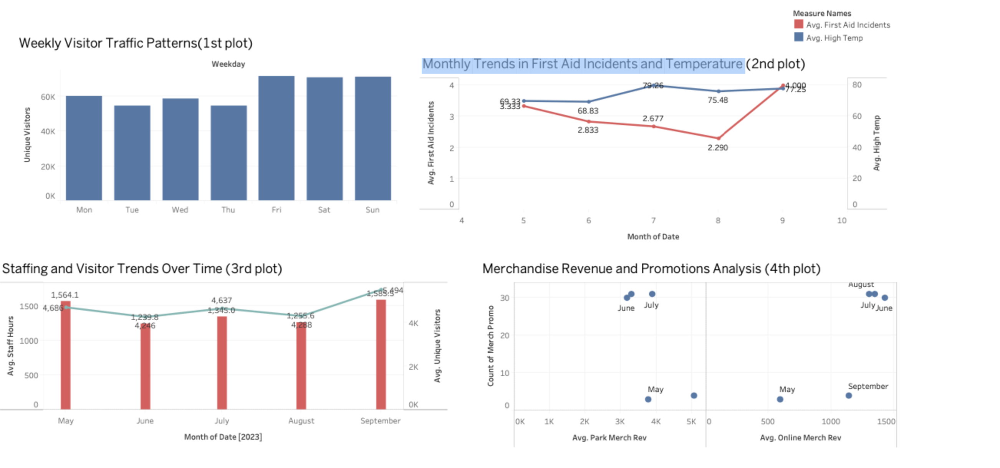

Welcome to the LobsterLand Dashboard
Your go-to tool for unlocking key insights into visitor engagement, operational efficiency, and revenue growth. 📊✨
What's Inside?
- Visitor Trends: A breakdown of unique visitors across the week, showing a weekend surge in traffic. Perfect for optimizing staffing, scheduling, and content planning!
- First Aid & Temperature Insights: An intriguing look at how temperature impacts first aid incidents, revealing a potential inverse relationship. Stay ahead with smarter safety strategies!
- Staffing vs. Visitor Flow: A deep dive into staffing needs versus visitor traffic, showing how peak summer months demand higher workforce allocation.
- Merchandise Revenue & Promotions: A scatter plot uncovering the impact of promotions on both park and online sales, helping fine-tune marketing strategies for maximum impact.
Power BI Dashboard
Power BI dashboard showcase Visitor Trends, Merchandise Revenue and Promotions Analysis, First Aid Incidents, and Temperature trends.

Why It Matters?
This dashboard empowers data-driven decisions, ensuring a seamless visitor experience, smarter resource management, and optimized revenue strategies. Let’s make LobsterLand even more amazing! 🎢🎯
Explore the Dashboard
You can explore the LobsterLand dashboard live and uncover more detailed insights by clicking the link below:
Visit LobsterLand Dashboard